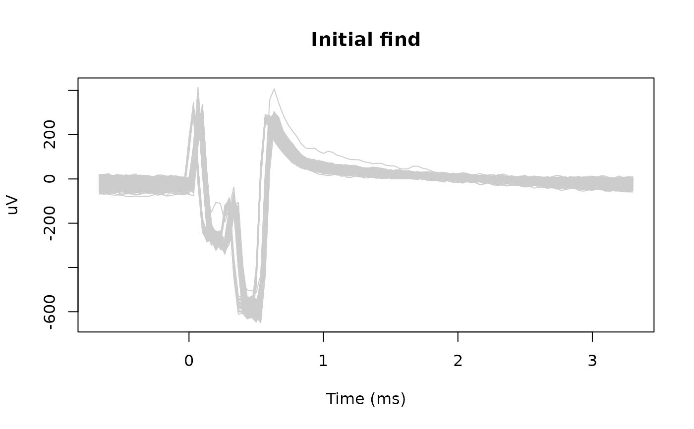
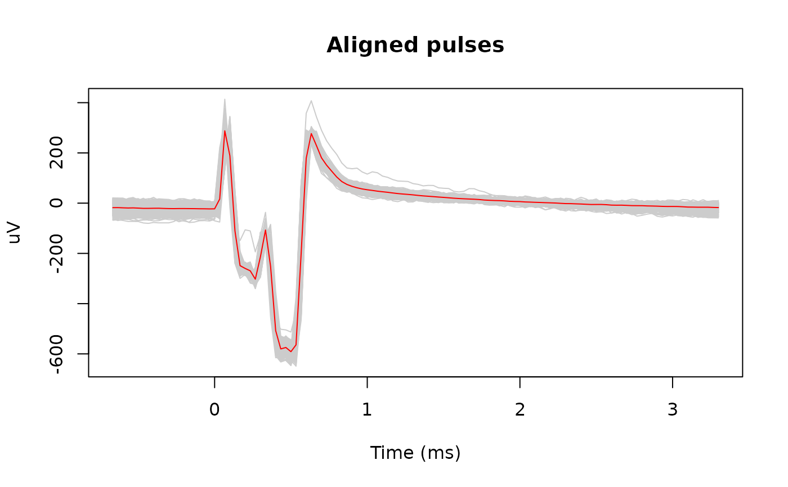
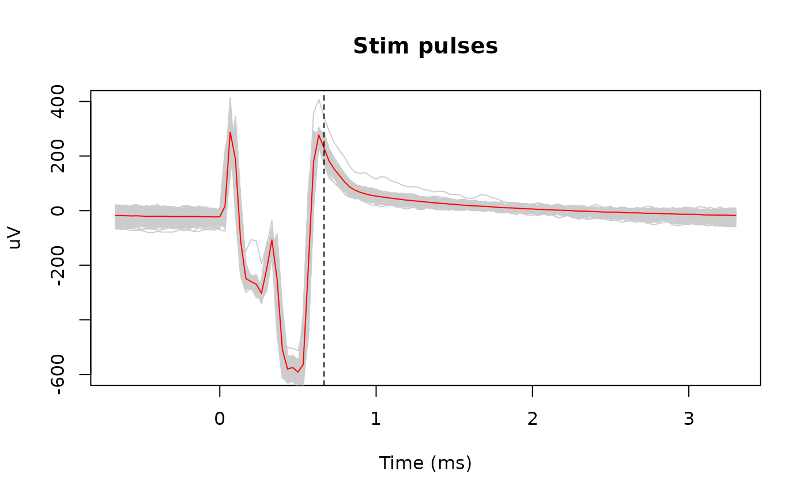
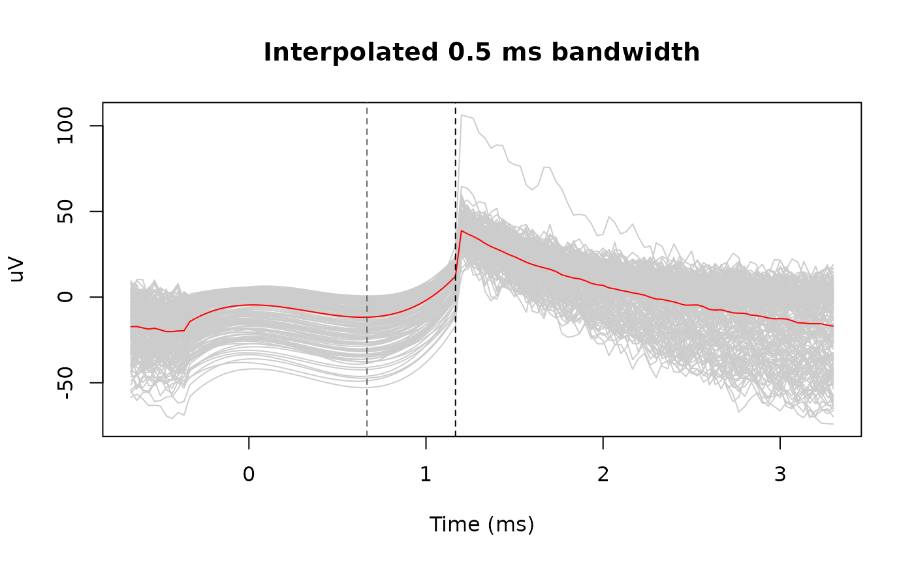

Find and interpolate stimulation pulses
Usage
stimpulse_find(
signal,
sample_rate,
pulse_duration,
n_pulses = NA,
threshold = NA
)
stimpulse_extract(
signal,
pulse_info,
expand_timepoints = c(-10, 20),
center = TRUE
)
stimpulse_align(signal, pulse_info, expand_timepoints = c(-10, 20))
stimpulse_interpolate(
signal,
sample_rate,
pulse_info,
max_offset = c(-2e-04, 5e-04)
)Arguments
- signal
a channel signal trace
- sample_rate
sample rate
- pulse_duration
stimulation pulse duration in seconds
- n_pulses
suggested number of pulses
- threshold
suggested suggested threshold of responses to find stimulation pulses
- pulse_info
a list containing number of pulses
n_pulse, onset index (onset_index, first time-point is 1), offset index (offset_index); this can be generated bystimpulse_find; see 'Examples' below- expand_timepoints
point offsets allowed to align the pulses
- center
whether to center the pulses by median; default is true
- max_offset
maximum (edge) offsets in seconds to interpolate the pulses; default is
-0.0002seconds before stimulation onset and0.0005seconds after the stimulation offset
Value
stimpulse_find and stimpulse_align returns the pulse
information (pulse_info) with the time-points of detected or corrected
stimulation on-set and off-set. The time-points are 1-indexed.
stimpulse_extract extract the signals around pulses;
stimpulse_interpolate returns interpolated signals.
Examples
data("stimulation_signal")
signal <- stimulation_signal$signal
sample_rate <- stimulation_signal$sample_rate
# each pulse is roughly <0.001 seconds
pulse_durations <- 0.001
# Initial pulses
pulse_info <- stimpulse_find(signal, sample_rate, pulse_durations)
# number of pulses detected
pulse_info$n_pulses
#> [1] 200
# extract responses -10 points before onset ~ 20 points after offset
expand_timepoints <- c(-20, 80)
pulses_snippets <- stimpulse_extract(
signal = signal,
pulse_info = pulse_info,
expand_timepoints = expand_timepoints
)
# Visualize the pulses
snippet_time <- seq(
expand_timepoints[[1]], by = 1,
length.out = nrow(pulses_snippets)) / sample_rate * 1000
matplot(snippet_time, pulses_snippets, type = 'l', lty = 1, col = 'gray80',
xlab = "Time (ms)", ylab = "uV", main = "Initial find")

# Align the pulses
pulse_info <- stimpulse_align(signal, pulse_info)
# Estimated pulse duration
estimated_duration <-
(pulse_info$offset_index - pulse_info$onset_index + 1) / sample_rate
# reload aligned pulses
pulses_snippets <- stimpulse_extract(
signal = signal,
pulse_info = pulse_info,
expand_timepoints = expand_timepoints
)
matplot(snippet_time, pulses_snippets, type = 'l', lty = 1, col = 'gray80',
xlab = "Time (ms)", ylab = "uV", main = "Aligned pulses")
lines(snippet_time, rowMeans(pulses_snippets), col = 'red')

# Interpolate the pulses
interpolated <- stimpulse_interpolate(
signal = signal,
sample_rate = sample_rate,
pulse_info = pulse_info,
max_offset = c(-0.0003, 0.0005)
)
interp_snippets <- stimpulse_extract(
signal = interpolated,
pulse_info = pulse_info,
expand_timepoints = expand_timepoints
)
oldpar <- par(mfrow = c(1, 2))
on.exit(par(oldpar))
matplot(snippet_time, pulses_snippets, type = 'l', lty = 1,
col = 'gray80', xlab = "Time (ms)", ylab = "uV",
main = "Stim pulses", ylim = c(-600, 400))
lines(snippet_time, rowMeans(pulses_snippets), col = 'red')
abline(v = max(estimated_duration) * 1000, lty = 2)

matplot(snippet_time, interp_snippets, type = 'l', lty = 1,
col = 'gray80', xlab = "Time (ms)", ylab = "uV",
main = "Interpolated 0.5 ms bandwidth")
lines(snippet_time, rowMeans(interp_snippets), col = 'red')
abline(v = max(estimated_duration) * 1000, lty = 2, col = "gray40")
abline(v = max(estimated_duration) * 1000 + 0.5, lty = 2)
